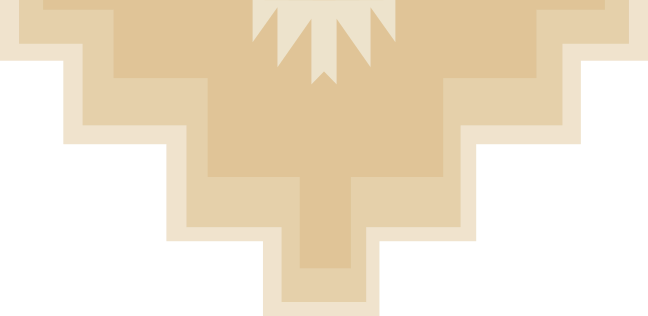

AS THE ELDERS TELL IT — THE FIRST SHEEP
Shaped from clouds, given breath
In Diné tradition the Holy People made the first sheep — a body molded from clouds, bones of straight willow, horns and hooves shaped from a rainbow, a face of dawn, eyes of rock crystal — then breathed life into them. The camp raises its flock inside that story.
